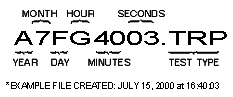
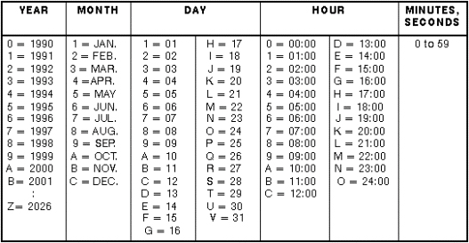
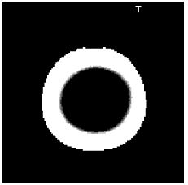
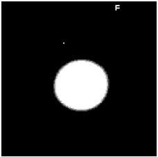
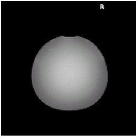
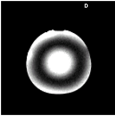
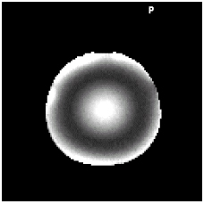

Proprietary to General Electric Company
Direction 5440000, Rev# 5
Signa HDxt Service Methods
Module Version 2.0, Version Date 6/3/09
Proprietary to General Electric Company |
TRMAP results can be displayed with both graphics and text. Refer to Report Manager Tool. Data Sheets and specifications can be found in DATA SHEETS.
See Illustration 1 for an example file name. Refer to Illustration 2 for data file naming convention.
Illustration 1: EXAMPLE TRMAP FILE NAME

Illustration 2: DATA FILE NAMING CONVENTION

TRMAP creates two different types of output, a set of five synthesized images (“maps”) and a table of statistics related to the maps. The table is displayed on the screen as the TRMAP analysis program is run. This is also what is viewed from Report Manager. The maps are installed as images in the image database. In addition, the table and some other acquisition related information is written to the file /usr/g/service/cclass/trmap_output. This file is overwritten by each run of the trmsvat script.
All maps will assign special (large negative) pixel values for all points considered background or where the fitting algorithm failed. The points successfully fit will be encoded with values as described in the following paragraphs. For a successful run of TRMAP, this will result in maps where the scanned object can be seen against a black background when the maps are displayed using an image viewer.
The T Map is a synthesized image where each successfully fit pixel in the object is set to the TG value that would flip that voxel of the phantom by 90 degrees. A letter T is burned into the upper right hand portion of the map. The T map allows you to see which locations in the object required more RF power to flip to 90 degrees and which required less. One useful way to evaluate the T map is to look at the map using an image viewer and set the window=0 and the level=Auto Prescan TG. This will show all pixels requiring less than the Auto Prescan TG to be flipped 90 degrees as black and all locations requiring more than the Auto Prescan TG to be flipped 90 degrees as white. An example of a T map windowed and leveled this way is given below.
Illustration 3: T Map

The F Map is a synthesized image where each successfully fit pixel in the object is set to the flip angle that would result from the APS TG. The F map and the T map are two ways of displaying the same data. A letter F is burned into the upper right hand portion of the map. The F map allows you to see the flip angle resulting from the Auto Prescan TG on different locations in the object. One useful way to evaluate the F map is to look at the map using an image viewer and set the window=0 and the level=90, which will show all pixels flipped less than 90 degrees by the Auto Prescan TG as black and all locations flipped more than 90 degrees by the Auto Prescan TG as white. An example of an F map windowed and leveled this way is given below. Notice how the object image is the inverse of the T map.
Illustration 4: F Map

The R Map is a synthesized image where each successfully fit pixel in the object is set to the peak intensity found from the fit. This amounts to compensating for the imperfect TG (imperfect transmit characteristics) used for that location of the object and thus only leaves variation caused by the receive hardware. The letter R is burned into the upper right hand portion of the map. An example of an R map is given below.
Illustration 5: R Map

The D Map is a synthesized image where each successfully fit point is set to the value obtained by subtracting the Auto Prescan TG image from the R map. This allows for visualization of asymetries in the receive characteristics. The letter D is burned into the upper right hand portion of the map. An example of a D map is given below.
Illustration 6: D Map

The P Map is a synthesized image where each successfully fit point is set to the value obtained by dividing the D map by the Auto Prescan TG image and multiplying by 100. This shows how many percent the image could be improved for the different locations in the object. The letter P is burned into the upper right hand portion of the map. An example of a P map is given below.
Illustration 7: P Map

1 ======================================================= 2 Fri Sep 11 14:53:32 CDT 1998 3 4 Background threshold used in the calculations: 876 5 FIT RESULTS: 6 Total points in images: 16384 7 Backgound points: 14280 Pixel value: -8000 8 Object points: 2104 9 Points successfully fit: 2104 10 FLIP ANGLE TABLE (Percent of pixels in degree interval): 11 89-91 88-92 87-93 86-94 85-95 80-100 75-105 70-110 65-115 12 47.1 68.3 79.9 86.8 90.6 98.3 100.0 100.0 100.0 13 STATISTICS FOR OUTPUT MAPS: 14 Mean Standard Dev. Min. Max. P-P 15 TG 141 3.17 135 155 20 16 Flip 89 3.17 76 96 20 17 Receive 2352 198.80 1765 3216 1451 18 Diff. 43 42.30 -53 286 339 19 Diff. % 2 1.71 -1 13 14 20 21 The output maps can be found in exam 50053 series 2 22 The TG values used for scanning were: 23 0 24 74 25 113 26 140 27 161 28 177 29 191
Line 2 of the file gives the date and time of the TRMAP analysis run.
Line 4 shows the number used as the threshold to discriminate between background and object points.
Lines 5-9 show how many pixels were in the image, how may were background points and the value assigned to those in the output maps, the number of object points and how many points were successfully fit. If not all object points are successfully fit, the number of pixels associated with each type of fit error and the code assigned to the output map pixels will be listed.
Lines 10-12 show how the flip angles are distributed in the F map. Flip angle ranges are listed with the percent of object points that fall within each range. As you move to the right in the table, the ranges become wider and consequently the percentage number larger.
Lines 13-19 give the mean, standard deviation, minimum, maximum and peak-to-peak values of the successfully fit points for all the maps.
Line 21 gives the location in the database of the output maps.
Lines 23-29 lists the TG values used for the TRMAP input images.
Data sheets for body and head are provided in DATA SHEETS. It is best to compare these results with those from another site or baseline results derived at the time the coil in question was installed.